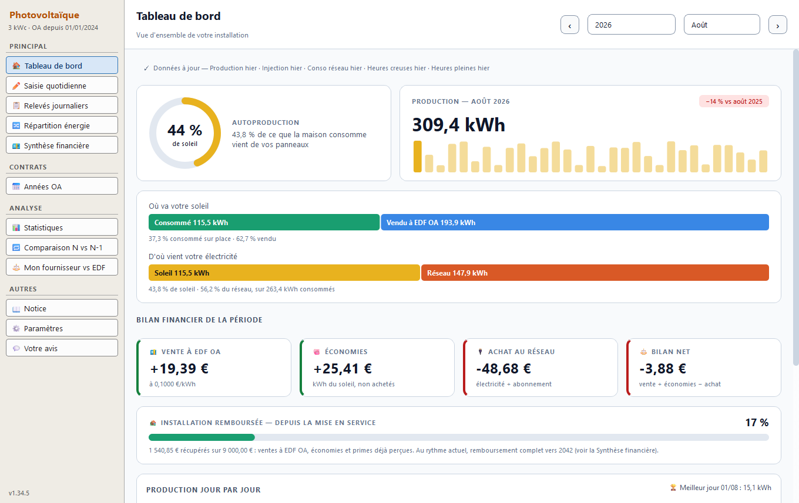
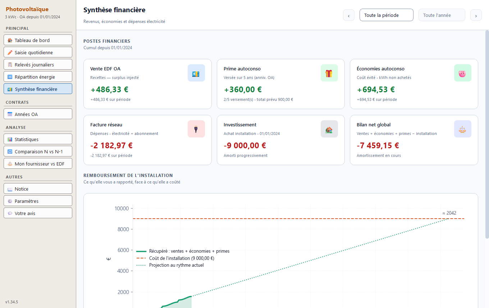
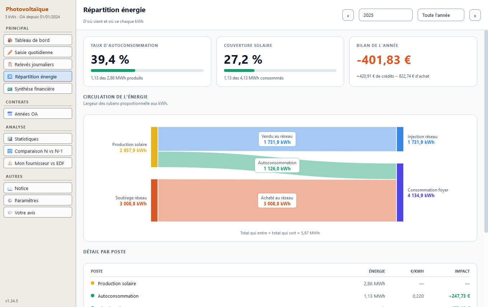
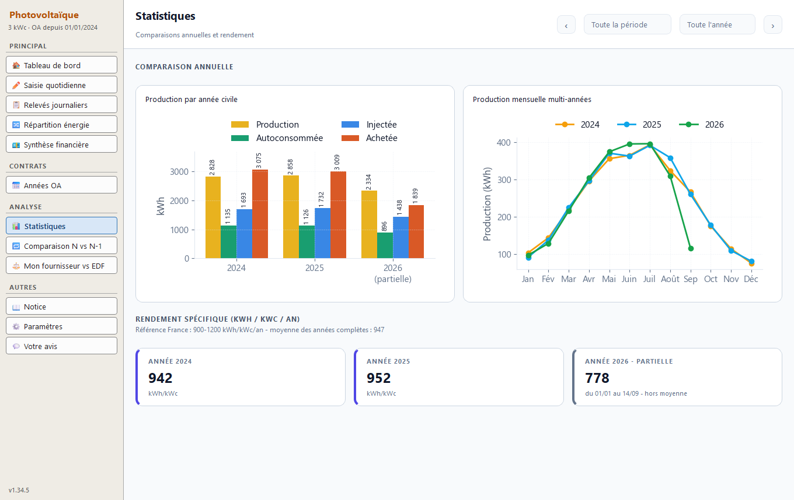
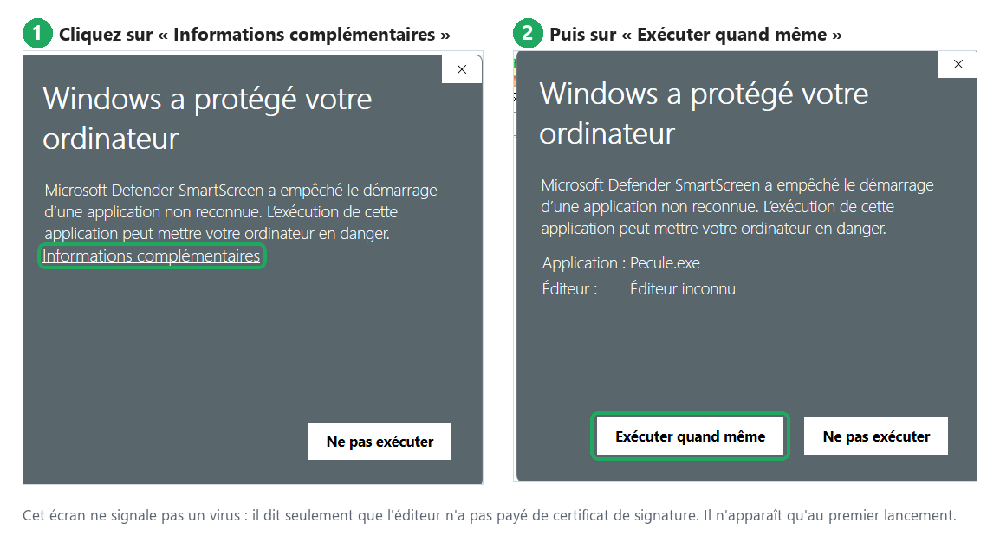

☀️ Gestion Photovoltaïque
Suivez votre installation solaire en autoconsommation : ce qu'elle produit, ce que vous consommez, ce que vous vendez à EDF OA, et quand elle sera remboursée.
Voir le code source sur GitHub →
Suivez votre installation solaire en autoconsommation : ce qu'elle produit, ce que vous consommez, ce que vous vendez à EDF OA, et quand elle sera remboursée.




Captures avec des données d'exemple.
Vous avez des panneaux solaires, vous consommez une partie de ce qu'ils produisent et vendez le reste à EDF OA. Les chiffres sont éparpillés : l'application de l'onduleur, l'espace Enedis, les factures du fournisseur, l'autofacturation annuelle d'EDF OA. Gestion Photovoltaïque les rassemble jour par jour et en tire ce que vous voulez vraiment savoir — sans abonnement, sans compte en ligne, et sans qu'aucune donnée ne quitte votre ordinateur.
La part de votre consommation qui vient du soleil, la production du mois comparée à l'an passé, et le bilan en euros.
Relevés Enedis (injection, consommation), suivi de consommation du fournisseur et export de l'onduleur — quelle que soit sa marque. Saisie à la main possible.
Les revenus du surplus injecté et la prime à l'autoconsommation, année de contrat par année de contrat.
Ce que l'électricité autoconsommée vous a évité d'acheter, au prix de votre propre contrat, heures pleines et creuses comprises.
Ce que l'installation vous a déjà rapporté face à ce qu'elle a coûté, et l'année où elle sera remboursée au rythme actuel.
Un diagramme montre d'où vient et où va chaque kWh : autoconsommé, vendu, acheté au réseau.
Une période face à la même un an plus tôt, et votre fournisseur face au Tarif Bleu d'EDF, en option Base et heures creuses.
Pour les producteurs assujettis à la TVA : la base de la livraison à soi-même, année par année. Invisible pour les autres.
Chaque enregistrement garde les versions précédentes de vos relevés : une erreur se rattrape.
pv-dashboard-Setup.exe.Vous préférez une version portable, sans installation ? Prenez plutôt le fichier
.zip
(rubrique « Assets » de la page) : décompressez-le où vous voulez (gardez tout le dossier
ensemble), puis double-cliquez sur pv-dashboard\pv-dashboard.exe. Vos données
vont, là aussi, dans votre dossier personnel.
Aucune installation de Python n'est nécessaire. Configuration requise : Windows 10 ou 11 (64 bits).
Pour mettre à jour, fermez l'application et lancez simplement le nouvel installeur : il remplace le programme sans toucher à vos données, rangées à part.
⚠️ Au premier lancement, Windows affiche un avertissement. C'est normal, et voici comment le passer :

Ce message ne veut pas dire que le logiciel est dangereux. Il apparaît parce que l'application n'est pas signée numériquement : un certificat de signature coûte plusieurs centaines d'euros par an, difficile à justifier pour un logiciel gratuit. Windows prévient donc qu'il ne connaît pas l'éditeur — pas que le fichier pose problème. Le code source est entièrement consultable sur GitHub.
Installation qui bloque, relevé qui ne s'importe pas, fonction qui manque : dites-le dans le questionnaire en ligne. Il prend deux minutes, ne demande aucun compte, et aucune réponse n'y est obligatoire. N'y indiquez ni adresse ni numéro de compteur.
Vous avez un compte GitHub ? Vous pouvez aussi ouvrir un ticket.
Toutes vos données restent sur votre ordinateur, dans votre dossier personnel
(%LOCALAPPDATA%\pv-dashboard, accessible par le raccourci Dossier des données
du menu Démarrer) : vos relevés, vos réglages et leurs sauvegardes. Rien n'est envoyé en
ligne : l'application ne fait aucun accès réseau, ne crée aucun compte et ne se connecte
ni à Enedis, ni à votre fournisseur, ni à votre onduleur — c'est vous qui lui donnez les
fichiers. Le bouton « Votre avis » se contente d'ouvrir le questionnaire dans votre navigateur.
Une désinstallation laisse vos données en place ; pour tout effacer, supprimez ce dossier.